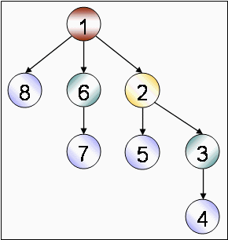
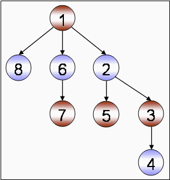

| Problem I: | Can't be too GREEDY |
|
Time Limit: 5 seconds Memory Limit: 32 MB |
|
| Greed is all right, by the way I think greed is healthy. You can be greedy and still feel good about yourself. -- Ivan F. Boesky |
|
|  |  |
| Greedy coloring LOOSES | Greedy coloring WINS |
Okay, don't get confused. Greed is good and greed is bad -- we all know that pretty well. There are problems that can be solved quite easily with greedy approach, and there are problems where it fails.
Your mission, should you choose to accept it, is to show how bad a greedy approach can turn out to be. Given a number of colors, you'd have to show that a greedy approach can be as bad as to need all the colors given to color a tree.
Some useful information:
Any tree with more than one node can be properly colored using two colors only.
Proper Coloring: A coloring of a graph is proper if no two adjacent vertices receive the same color.
Greedy approach for graph coloring: Given a permutation (ordering) of the vertices, color each vertex using the least available proper color. Example: Let A be a vertex that is connected to B, C and D. B is connected to C and D. Given the permutation CDBA, you'd assign color 1 to C, 1 to D, 2 to B and 3 to A. Thus the greedy approach needs 3 colors (which is also optimal in this case) to color this graph.
Degree of a Vertex: The number of vertices connected to this vertex.
2 4
2 1 1 2 1 2 8 7 1 2 2 3 2 5 4 3 1 6 8 1 6 7 8 4 7 5 3 6 2 1
Note: The image with the problem statement corresponds to the second sample output. A level order traversal on the tree would have allowed the greedy algorithm to use optimal coloring.
"Academic activities comes first and then comes the extra curricular activities like participating in programming contests, this message should be clear to all" -- some wise men would say to the contestants. But a contestant should be wise enough to safely ignore this message and would be ready to pay whatever prices are to be paid for ignoring the message. The wise contestant would say, "It is the contests that made me learn what I know, the academic activities have left little contribution there."